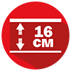

Основные характеристики

Высота матраса
Нагрузка на одно спальное место
Гарантийное сервисное обслуживание
Беспружинная система
Тип жесткости: средней жесткости/жесткий
Матрас Come-For Coco Roll можно постелить на диван, раскладное кресло и даже на пол. Он создан, чтобы сделать непригодную для сна поверхность безопасной и комфортной для качественного отдыха. Наличие такого матраса не помешает, если у вас любят оставаться гости с ночевкой, и вам приходится доставать раскладушку или сооружать спальное место на полу
КОНСУЛЬТАЦИЯ ЭКСПЕРТА


Высота матраса
Нагрузка на одно спальное место
Гарантийное сервисное обслуживание
Беспружинная система
Тип жесткости: средней жесткости/жесткий
Беспружинный матрас Come-For Coco Roll – это 16-сантиметровое изделие с поверхностями средней и высокой жесткости. В качестве основного слоя здесь используется эластичный и упругий материал Aero Foam. Для повышения уровня жесткости мы добавили кокосовую койру и немного компенсировали ее твердость пеной Soft Foam. Это матрас с ортопедическими и анатомическими свойствами, одно спальное место которого выдерживает до 130 кг. Подойдет в качестве легкого матраса на двухъярусную кровать. Гарантия на изделие 3 года.
Экологически чистый, гипоаллергенный, воздухопроницаемый материал. За счет латексирования материал приобрел упругость, эластичность и устойчивость к деформациям. Латекс позволяет блоку койры не крошиться и не рассыпаться. Если вы ищете матрас с повышенной жесткостью, но вто же время упругий, обратите внимание на модель с койрой.
Второе поколение уникальной пены. При ее разработке была поставлена цель – еще больше повысить уровень комфорта. Для ее достижения была применена улучшенная форма ячеек и разность их диаметра. В результате при малом давлении на спальное место срабатывают крупные ячейки, которые создают невысокое сопротивление пены и поддерживают анатомические свойства. Когда давление увеличивается, начинают работу мелкие ячейки и пена приобретает ортопедические свойства.
Технология скрепления настилочных слоев термоклеем. Расплавленный в специальной емкости клей под давлением подается в промышленный пистолет, и затем равномерно распыляется в виде паутины. Используемый компанией Come-for клей экологичен, не имеет запаха и безопасен для вашего здоровья.
Особая мягкая пена. Именно она создает эффект воздушности спального места, который многие ценят в матрасах.
Качественный текстиль, производимый на турецкой фабрике и соответствующий высоким требованиям к качеству. Он покоряет невероятно приятной текстурой и доказывает правильность выбора отличной износостойкостью. Он не мнется, не склонен к истираемости и выцветанию. А за счет высокой воздухопроницаемости он подарит одинаково комфортные ощущения зимой и летом, независимо от температуры и влажности в помещении.
Нетканый материал с объемной пышной структурой. Синтепон сочетает в себе мягкость и прочность, и используется в качестве наполнителя при производстве стеганой ткани, тем самым увеличивая мягкость изделия.
Нетканый искусственный материал широкой гаммы цветов. Он сочетает прочность, легкость, износостойкость и воздухопропускаемость. Именно благодаря этим качествам мы используем спанбонд для производства пружинного блока Pocket Spring. Из этого материала пошиты индивидуальные чехлы, которые защищают пружины и обеспечивают главную особенность Pocket Spring – равномерное распределение нагрузки на спину. Спанбонд обладает хорошей теплоизоляцией, поэтому используется для обшивки поверхностей матрасов и пошива съемных чехлов.
{kind=link}
{kind=link}
{kind=link}
{kind=link}